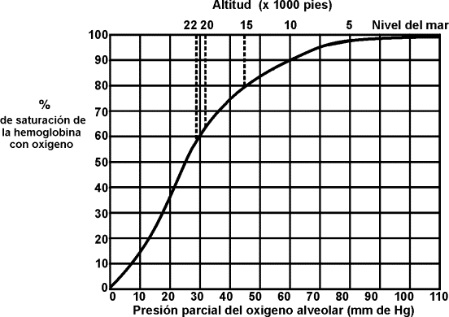

LA ATMÓSFERA Y LA RESPIRACIÓN
Keith E. E. Read (1981)
DEFINICIONES
La atmósfera
La
atmósfera, que pesa más de 5,6 trillones de toneladas, rodea a la Tierra hasta una
altura aproximada de 300 Km. y se ve impedida de escapar al espacio, debido a la fuerza de
atracción de la gravedad. El Sol, situado a una distancia de 149,6 millones de
kilómetros de nosotros, es nuestra fuente de energía, y, junto con la atmósfera,
constituye las condiciones ambientales necesarias para la existencia de la vida en la
superficie de la tierra. El hombre, pequeña criatura terrestre, sólo puede sobrevivir en
los primeros 6000 m de esta envoltura gaseosa.
La
atmósfera, que está formada principalmente por oxígeno y nitrógeno, contiene
algo de vapor de agua y cantidades minúsculas de bióxido de carbono y gases
inertes como argón, helio y criptón.
El vapor
de agua es uno de los componentes invisibles del aire, como la sal es uno de los
componentes invisibles del agua del mar. Mientras la cantidad de vapor de agua que puede
llevar un poco de aire dependerá hasta cierto punto de la presión barométrica, está
determinada en gran parte por la temperatura atmosférica. Por ejemplo, 1000 g de aire a
16º C pueden contener 11 g de vapor de agua, pero si la temperatura baja 7º C, 6 g de esa agua se materializarán en gotitas, formando una
nube, o en gotas mayores, ocasionando rocío o lluvia.
Una
caloría es el calor necesario para elevar un gramo de agua en un grado de temperatura,
pero se necesitan casi 600 calorías de energía solar para que un gramo de agua de la
superficie terrestre pueda transformarse en vapor de agua por evaporación. En el punto
de condensación estas calorías se desprenden como calor latente cuando se precipita
el vapor de agua y se efectúa la formación de nubes. En la noche, bajo un cielo claro y
despejado, la superficie de la tierra se enfría rápidamente por pérdida de calor por
radiación, pero cuando está cubierta por una capa de nubes bajas se comporta como una
tetera tapada y conserva el calor. De ese modo, el vapor de agua que origina las nubes y
ayuda a la formación del tiempo meteorológico, transportando ingentes cantidades de agua
y calor por la superficie de la tierra tiene una importancia que nadie supondría, dada su
escasa presencia física, que constituye únicamente el 1 por 100 de la atmósfera hasta
una altura de unos 20.000 metros.
A nivel
del mar, la atmósfera patrón internacional se define con una temperatura de 15º C y una
presión de 760 mm de mercurio. Esta presión suele expresarse como de 14,7 libras por
pulgada cuadrada en los equipos de buceo y de 1013,2 milibarias (mb) en la escala de los
altímetros de los aviones. Por definición, la milibaria es una presión de 1000 dinas
por centímetro cuadrado y, a su vez, la dina es una unidad de fuerza que, aplicada
durante un segundo a una masa de un gramo le imprime una velocidad de un centímetro por
segundo (1 cm/s).
Como en el
sistema internacional de medidas (S.l.) la unidad de fuerza es el neutonio -que
produce una aceleración de un metro por segundo en una masa de 1 Kg.- y la de presión es
el neutonio por metro cuadrado, la milibaria equivale a 100 neutonios por metro cuadrado
(1mb = 100 N/m2).
La
situación durante este período interino es inevitablemente bastante confusa, con
una mezcla de unidades de diferentes sistemas (nos referimos al hecho de que los países
anglosajones aún no han pasado completamente al sistema métrico), especialmente en
aviación, y creemos que lo mejor es ofrecer datos en la forma en que es más probable que
los pilotos las encuentren en los próximos años.
La ley
de Dalton expresa que la presión total de una mezcla gaseosa es la suma total de las
presiones parciales ejercidas por cada constituyente, y dado que el aire consta
aproximadamente del 21 % de oxígeno y 78 % de
nitrógeno, dedúcese que la presión parcial del oxígeno al nivel del mar es de 760 x
21/100 = 160 mm de Hg.
Las
propiedades físicas de la atmósfera permiten dividirla en capas que rodean la tierra, de
un modo similar a las de las cebollas. La más baja de tales capas, que es la que está en
contacto con el suelo, se llama troposfera separada por la tropopausa de la estratosfera
superior. La tropopausa, que varía de altura de 7.500 a 13.500 metros, es más gruesa
en el ecuador y menos en los polos.
Todo
aumento de altitud implica una reducción de la presión, ya que hay menos aire encima.
Puesto que los gases se calientan si se les comprime (como se aprecia, por ejemplo, en una
bomba de inflar neumáticos), es lógico que se enfríen si se expanden, razón por la
cual en las mayores altitudes se encontraran menores temperaturas. La proporción en que
se enfría el aire al crecer la altitud como consecuencia de la expansión es lo que se
llama índice de degradación térmica adiabática y el índice patrón
internacional de degradación térmica adiabática se define como de 2º C por
1000 pies (301,75 m). En la tropopausa se encuentran temperaturas comprendidas entre -40 y
–80º C y allí crean una paradoja climática, porque, dado que la tropopausa es más
baja en aquellas regiones, será mas templada en los polos que en el ecuador. Encima, en
la estratosfera, la temperatura se mantiene casi constante.
La energía
solar (insolación) atraviesa la atmósfera y llega hasta el suelo. La atmósfera en
sí queda poco afectada por el paso a su través de la energía solar radiante, pero se
calienta desde abajo gracias a las corrientes de convección causadas por el calentamiento
de la superficie de la tierra.
En la
Tabla 1 se indica la relación existente entre la altitud y la presión atmosférica. Se
observará que esta última disminuye logarítmicamente al crecer la altitud.
En
condiciones de formación de nubes, el aire debajo de ellas que está subiendo se
enfriará adiabáticamente con un índice aproximado de 3º
C por cada 1000 pies (301,75 m) (índice de degradación térmica adiabática seca). Una
vez alcanzado el punto de condensación y efectuándose la formación de nubes, la cesión
de calor latente retardará el índice adiabático hasta un 1,5º C por cada 301,75 m (índice
de degradación térmica adiabática saturada).
Tabla
1
Presión atmosférica en función de la
altitud
Altitud |
Presión |
Altitud |
Presión |
0 |
760.0 |
20000 |
349.1 |
500 |
746.4 |
21000 |
334.6 |
1000 |
732.9 |
22000 |
320.8 |
2000 |
706.6 |
23000 |
307.4 |
3000 |
681.1 |
24000 |
294.4 |
4000 |
656.3 |
25000 |
281.8 |
5000 |
632.3 |
26000 |
269.8 |
6000 |
609.0 |
27000 |
258.0 |
7000 |
586.4 |
23000 |
246.8 |
8000 |
564.4 |
29000 |
236.0 |
9000 |
543.2 |
30000 |
225.6 |
10000 |
522.6 |
31000 |
215.4 |
11000 |
502.6 |
32000 |
205.6 |
12000 |
483.3 |
33000 |
196.3 |
13000 |
464.4 |
34000 |
187.3 |
14000 |
446.4 |
35000 |
178.7 |
15000 |
423.8 |
36000 |
170.3 |
16000 |
411.8 |
37000 |
162.4 |
17000 |
395.3 |
38000 |
154.8 |
18000 |
379.4 |
39000 |
147.5 |
19000 |
364.0 |
40000 |
140.7 |
Respiración
El aire
entra en el cuerpo por la nariz, donde se filtra, templa y humidifica. Por el acto de la
inspiración se lleva a los pulmones a través de la tráquea, y en ellos a los alvéolos.
Aquí el oxígeno se difunde en el torrente sanguíneo por un gradiente de presión.
El área de todos los alvéolos de que se dispone en los pulmones para la difusión del
oxígeno es equivalente a la superficie de suelo de una habitación de 11 x 6 m, es decir
66 m2. El oxígeno se combina con la hemoglobina para formar oxihemoglobina en
los hematíes y en ellos se lleva a todas las partes del cuerpo. En la presión
atmosférica al nivel del mar, 100 mililitros (ml) de sangre transportarán 19 ml de
oxígeno. Uno de los productos de desecho de las reacciones bioquímicas del cuerpo humano
(metabolismo) es el bióxido de carbono, que se elimina mediante el torrente
sanguíneo. En los pulmones, gracias al gradiente de presión, el bióxido de carbono se
difunde por la membrana alveolar para entrar en el aire alveolar. desde donde,
mediante el acto de la espiración, es expelido del cuerpo. El centro respiratorio del
cerebro que controla el ritmo de la respiración está estimulado por las cantidades
crecientes de bióxido de carbono disuelto en la sangre formando ácido carbónico. Al
aumentar el tenor de ácido carbónico en la sangre crece también la acidez del cuerpo,
en tanto que su disminución tiende a hacer el cuerpo más alcalino.
La
capacidad total de los pulmones es de 5 litros y en reposo el hombre necesita respirar
unos 8 l de aire por minuto. Un ejercicio violento aumentará esta necesidad incluso hasta
60 l por minuto. En reposo, cada respiración implicará el movimiento de medio litro de
aire, que entra y sale de los pulmones: aproximadamente un décimo de su capacidad.
Dedúcese
pues que los pulmones no renuevan todo el aire usado que en ellos hay en cada
respiración, estado que se agrava por la extracción constante de oxígeno del aire
alveolar por parte de la sangre y el aporte, también constante, de bióxido de carbono a
ese aire desde el torrente sanguíneo. Como consecuencia, la composición del aire
alveolar es muy diferente de la que corresponde al atmosférico, ya que contiene, además
de nitrógeno y oxígeno, cantidades importantes de vapor de agua y bióxido de carbono.
En el nivel del mar, la presión parcial ejercida por el contenido de vapor de agua es de
47 mm Hg. y la del bióxido de carbono es de 40 mm Hg., lo que hace que la presión del
aire alveolar seco sea de 713 mm Hg. (760 - 47 = 713).
La
composición del aire alveolar seco es:
oxígeno
14,5 %
nitrógeno
80,0 %
bióxido de carbono
5,5 %
Por eso al
nivel del mar, donde la presión del oxígeno atmosférico es de 160 mm. Hg., el oxígeno
alveolar queda reducido a 103 mm Hg. 
Fig.1 - Relación entre la capacidad de
transporte de oxígeno de la sangre la presión parcial del oxígeno alveolar
En la fig. 1 se observa que subiendo a 10.000 pies (unos 3.000 m) se
produce una situación en la que, aunque la presión del oxígeno alveolar ha disminuido
en 40 mm Hg, la sangre está aún saturada al 90 % de su capacidad de oxígeno. El asunto
es más grave por encima de los 10.000 pies, porque entonces las reducciones relativamente
pequeñas de la presión del oxígeno alveolar van asociadas con disminuciones
desproporcionadas de la capacidad de transportar oxígeno que la sangre tiene. Resumiendo,
el hombre puede volar con seguridad y sin preocupaciones hasta los primeros 8.000 pies
(2.440 m) de la atmósfera, pero en altitudes superiores a los 10.000 pies (3.000 m) su
eficacia primero y su vida después queda en unas condiciones precarias sí no se ha
previsto un aporte suplementario de oxígeno.
Volver Arriba